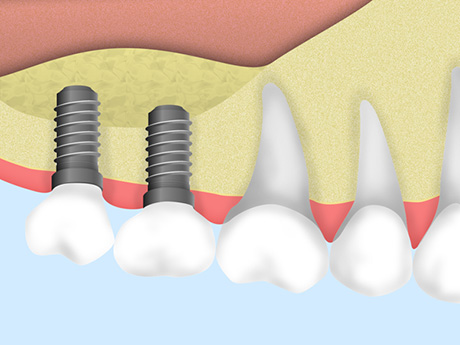

何でも食べられるお口を取り戻したい
近年、失った歯の機能を回復させる治療として、インプラント治療が多くの方に選ばれるようになりました。インプラント治療を行うと、自分の歯の感覚で何でも食べられるようになります。また見た目もとても自然に仕上がるなど、多くのメリットがあります。インプラント治療については、町田市の歯医者「ワイズデンタルオフィス」までご相談ください。
自分の歯ように咬めるようになるインプラント治療
インプラント治療とは、歯を失ってしまった顎の骨にネジ状のインプラント（人工歯根）を埋め込み、その上に人工歯を装着して歯の機能と見た目を回復させる治療法です。インプラントが顎の骨としっかり結合するため、入れ歯やブリッジにはない安定した咬み心地を得られます。またセラミック製などの人工歯を用いることで、見た目もとても自然です。
日々適切なブラッシングを行い、定期的なメインテナンスを欠かさなければ、長期的に使用できるなど、インプラント治療には多くのメリットがあります。入れ歯やブリッジにご不満がある方、自分の歯のような自然な咬み心地を取り戻したい方は、インプラント治療をご検討ください。
インプラント・入れ歯・ブリッジの比較
※表は左右にスクロールして確認することができます。
| インプラント | 入れ歯 | ブリッジ | |
|---|---|---|---|
| メリット |
|
|
|
| デメリット |
|
|
|
当院のインプラント治療
当院では大学病院で採用されている歯科用CTを導入しておりますので、院内で精密検査および診断が行えます。担当する歯科医師は豊富な実績を持っており、さまざまな症例に対応が可能です。
インプラント治療に関する確かな知識・技術を持っているスペシャリストですので、どうぞ安心してご相談ください。
他院でインプラント治療を断られた方へ
インプラントを埋め込むには、十分な顎の骨量が必要です。顎の骨が足りないことを理由に、インプラント治療を断られてしまうこともあるでしょう。
当院では不足した顎の骨を再生させる治療が行えますので、他院で「インプラント治療は無理」と言われてしまった方でも、治療できる可能性があります。あきらめる前に、一度ご相談ください。
ソケットリフト
歯周病の悪化などにより、上顎の骨が足りなくなった場合に行う治療です。上顎洞（じょうがくどう：上顎の上にある空間）の底部分を持ち上げてスペースを作り、ご自身のほかの部分から採取した骨や骨補てん材などを注入して骨を造成します。骨にある程度の厚みが残っていれば行える治療です。
- STEP01
- STEP02

- STEP03
サイナスリフト
ソケットリフトと同じく、上顎の骨を増やす治療です。上顎洞を覆っている粘膜をめくってリフトアップし、できたスペースにご自身のほかの部分から採取した骨や骨補てん材などを注入します。こうして骨を造成し、インプラントを埋入できるようにします。
- STEP01
- STEP02

- STEP03
- 
GBR
顎の骨が不足している場合に行う治療です。骨が足りない部分に、ご自身のほかの部分から採取した骨や骨補てん材などを入れ、「メンブレン」という特殊な膜を入れてスペースを確保しながら再生を促します。3～6カ月ほどをかけて骨が再生したら、インプラントを埋め込みます。
- STEP01
- STEP02

- STEP03
症例紹介
○○の症例
 |
|
テキストが入ります。テキストが入ります。テキストが入ります。テキストが入ります。テキストが入ります。テキストが入ります。テキストが入ります。テキストが入ります。テキストが入ります。テキストが入ります。テキストが入ります。
| 治療における注意点・リスク | |
|---|---|
| 治療期間 | |
| 治療費用 |
○○の症例
|
|
テキストが入ります。テキストが入ります。テキストが入ります。テキストが入ります。テキストが入ります。テキストが入ります。テキストが入ります。テキストが入ります。テキストが入ります。テキストが入ります。テキストが入ります。
| 治療における注意点・リスク | |
|---|---|
| 治療期間 | |
| 治療費用 |
インプラント治療の費用について
| ¥ | |
| ¥ | |
| ¥ |
むし歯・歯周病にならないために「予防歯科・定期検診」